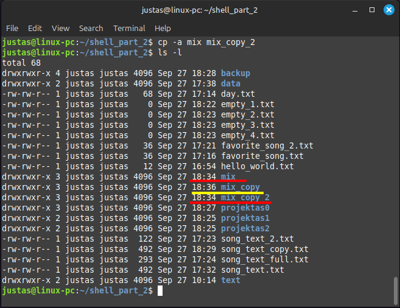
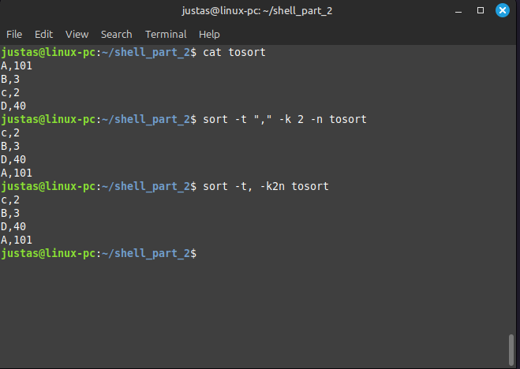

6 BASH komandos
6.1 Failų ir direktorijų valdymas
Praėjusiame skyriuje išmokai naviguoti terminale naudojant komandas pwd ir cd. Sužinojai apie Linux failų sistemą: kaip matyti visų failų ir katalogų sąrašą naudojant ls komandą, bei tai, kad Linux sistemoje vartotojai turi skirtingas teises, priklauso grupėms, ir kiekvienas failas turi savininko, grupės, bei kitų vartotojų teises naudotis tuo failu ar katalogu. Taip pat išmokai svarbių klaviatūros trumpinių, kaip peršokti į komandinės eilutės pradžią (Ctrl-A), pabaigą (Ctrl-E), nutrinti dalį (Ctrl-U), kaip kopijuoti ir įklijuoti į terminalą naudojant Ctrl-Shift-C ir Ctrl-Shift-V. Išmokai dirbti su terminalo istorija naudojant history ir kartoti komandas su !n.
Šiame skyriuje skirsi dėmesį darbui su failais ir direktorijomis. Tu išmoksi kurti failus ir direktorijas, juos kopijuoti, perkelti, ištrinti. Taip pat išmoksi sujungti kelias komandas. Ir šio skyriaus pabaigoje pamatysi, kad tavo BASH įgūdžiai tampa dar stipresni!
Prieš pradedant, įsitikink, kad turi keletą svarbių programų: jq ir curl. Kaip ir praėjusiame skyriuje, kai ieškojaiwhich $SHELL, komanda tau parodė, kur yra binary failas (programa). Dabar padaryk tą patį:
- Patikrink, ar turi
curl, suwhich curl. - Patikrink, ar turi
jq, suwhich jq.
Jei tavo kompiuteris aptinka šias programas, terminalas atspausdins vietą, kur jos yra įdiegtos. Jei terminalas jų neranda, įdiek curl ir jq kaip sisteminius paketus naudojant apt. Jei pamiršai, kaip tai daryti, pakartok ankstesnę medžiagą.
Kai tai atliksi, nukopijuok ir paleisk šią komandą savo terminale - ji sukurs direktoriją shell_2_dalis tavo namų direktorijoje kartu su visais šiam skyriui reikalingais failais:
curl -s https://gist.githubusercontent.com/justasmundeikis/b4bfc0d672a859afc0fe28f1e721e167/raw | bashJeigu viskas gerai, turėtum pamatyti:
Pasikartok komandas cd, prisimink absoliutų ir reliatyvų kelią, bei ką reiškia ~, . ir ... Šiame skyriuje taip pat dažnai reikės naudoti ls, tad pasikartok šią komandą ir jos nustatymus dabar.
Su ls komanda atspausdink long formatu savo home directory turinį. Paaiškink visas šios eilutės reikšmes.

Pakeisk savo darbinę direktoriją į ~/shell_2_dalis. Kaip pasikeitė tavo prompt? Paaiškink, kas čia yra kas.
6.1.1 echo
Komanda echo naudojama norint atspausdinti vartotojo įvestį (input) terminale (dar vadinamą standartine išvestimi, angl. standard output). Tai paprasta, bet galinga komanda, dažnai naudojama skriptuose pranešimams rodyti arba kintamųjų reikšmėms tikrinti.
Nors nėra būtina tekstą apskliausti kabutėmis, dėl geresnio aiškumo ir įskaitomumo patartina tai daryti.
echo Hello World!
echo 'Hello World!'
echo "Hello World!"Reikėtų atkreipti dėmesį, jog dvigubos kabutės (" ") ir viengubos kabutės (' '’) šiek tiek skiriasi. Tekstas, esantis viengubose kabutėse (' '), atspausdinamas paraidžiui, nepaisant ten esančių kintamųjų. Tuo tarpu tekstas, esantis dvigubose kabutėse (" "), yra interpretuojamas, ir Shell leidžia naudoti kintamųjų vertes.
Pabandyk šias komandas, kurios naudoja kintamąjį $USER, atspausdinantį shell sesijos vartotojo vardą:
echo My username is $USER
echo 'My username is $USER'
echo "My username is $USER"Ar pastebi, kuo skiriasi išvestis?
6.1.2 > ir >> operatoriai
> ir >> operatoriai naudojami išvesties nukreipimui (angl. output redirection). Jie nukreipia komandos išvestį (angl. output) į failą, o ne į terminalą. Šie operatoriai yra esminiai dirbant su failais ir automatizuojant užduotis skriptuose.
> operatorius nukreipia komandos išvestį į failą, perrašydamas jo turinį, jei failas jau egzistuoja. Jei failas neegzistuoja, jis bus sukurtas.
Ši komanda sukuria (arba perrašo) failą hello_world.txt su tekstu “Hello World!”.
echo "Hello World!" > hello_world.txtKaip echo komanda ir jos argumentas “Hello World!” buvo nukreipti į tekstinį failą, taip galime nukreipti ir kitų komandų išvestis į failus. Operatoriaus > argumentas nebūtinai turi būti tik failo pavadinimas, tai gali būti ir failo pavadinimas su absoliučiu ar reliatyviu adresu.
ls > mix/direktorijos_turinys.txtŠi komanda nukreipia ls komandos išvestį į failą direktorijos_turinys.txt, kuris yra mix subdirektorijoje. Atsidaryk šį failą ir patikrink, ar jis susikūrė teisingai. Turėtum matyti kažką panašaus į šį vaizdą:
Liekant shell_part_2 direktorijoje, atspausdink namų direktorijos (angl. home directory) turinį su visais paslėptais failais, ilguoju formatu ir žmonėms geriau suprantamais failų ir direktorijų dydžiais, ir nukreipk išvestį į mix subdirektorijoje esantį failą direktorijos_turinys.txt, jį perrašant.
Intarpas
Hey, ką tik gavai užduotį. Ateityje gausi panašias ir dar sudėtingesnes užduotis. Todėl šioje vietoje padarykime intarpą. Pakalbėkime apie vieną svarbiausių darbo būdų programavime (ir ne tik!) - darbų skaidymą (angl. break down).
Kartais gali gauti labai sudėtingą užduotį, kuri iš pradžių atrodys neįveikiama ar nesuprantama. Tai visiškai normalu. Nestresuok - giliai įkvėpk, iškvėpk, jei reikia, pasiimk popierių ir pieštuką ir pradėk skaidyti darbus į logines sekas. Pvz., prieš tai buvusią užduotį galima suskaidyti į tris dalis:
- reikia failų ir direktorijų sąrašo
- atspausdinti perrašant
- failo pavdinimas
Dabar galima skaidyti ar toliau detalizuoti kiekvieną iš šių dalių.
- ls -alh pagamina sąrašą ilguoju, žmonėms suprantamų dydžių formatu
>perrašo- direktorijos_turinys.txt bus pavadinimas
Tačiau dabartinė darbinė direktorija yra ~/shell_part_2, todėl reikia
ls -alhkaip argumentą paduoti~arba atitinmai/home/username- direktorijos_turinys.txt turi būti mix subdirektorijoje
Skaidant užduotį į mažesnes dalis, vis labiau suprasi, ką reikia padaryti. Turint daugiau patirties, geriau žinosi, kiek laiko gali prireikti kiekvienam žingsniui.
Pvz., duomenų analitikas gali gauti užduotį: suprognozuoti sekančių metų ledų pardavimus. Analitikas, žinodamas, kad ledų pardavimai priklauso nuo lauko temperatūros, gali suskaidyti darbus taip:
- Importuoti istorinius tam tikros vietos temperatūros duomenis
- Prognozuoti sekančių metų kiekvienos dienos temperatūras
- Apskaičiuoti kiekvienos dienos pardavimus
- Aprašyti duomenis ir pateikti juos užsakovui suprantamu formatu
Kiekvieną iš šių žingsnių analitikas gali suskaidyti į dar daugiau mažesnių užduočių.
Kodėl tai svarbu? Visų pirma, tai padeda geriau suprasti, ką reikia padaryti, ir kiek tai gali užtrukti. Kiekvienas žingsnis tampa atskiru procesu, ir jei nepavyksta vienas metodas, gali bandyti kitą.
Darbų skaidymas yra intuityvus procesas kasdieniame darbe ir tu jau šį metodą ir taip taikai pasąmoningai, bet kai gauname naujas ir labai sudėtingas užduotis, vis tiek verta prisiminti šią strategiją, nes kartais mes pamirštame, kaip ji padeda išvengti pasimetimo.
>> operatorius nukreipia komandos išvestį į failą, pridedant (angl. append) prie failo turinio. Jei failas neegzistuoja, jis bus sukurtas.
echo "What a beatiful morning" >> day.txt
echo "What a beatiful day" >> day.txt
echo "What a beatiful evening" >> day.txtŠios komandos prideda tekstą “What a beautiful morning”, “What a beautiful day” ir “What a beautiful evening” prie failo day.txt galo, neperrašydamos esamo turinio. Jei tokio failo nėra, jis bus sukurtas.
- Susirask tau patinkančios dainos tekstą internete.
- Naudojant komandą
echoir operatorių>, sukurk failą favorite_song.txt. Failo turinys turėtų būti panašus į “My favorite song is”. - Pirmas keturias dainos eilutes atspausdink į failą song_text.txt naudojant
echoir>>. Nepamiršk, kokie klaviatūros trumpiniai naudojami kopijuojant ir įkeliant tekstą į terminalą!
6.1.3 cat
Komanda cat (angl. concatenate, liet. „sujungti“) naudojama peržiūrėti, sujungti ir atspausdinti failus. Tai viena iš pagrindinių Linux komandų, nes leidžia greitai peržiūrėti failų turinį, įvesti turinį į kitus failus arba sujungti kelis failus į vieną.
Praeitame skyriuje sukūrei du failus favorite_song.txt ir song_text.txt. Dabar juos ir naudosime.
Atspausdink failo favorite_song.txt turinį į terminalą:
cat favorite_song.txtPas mane tai atrodo taip:
cat leidžia sujungti kelių failų turinį ir atspausdinti rezultatą terminale:
cat favorite_song.txt song_text.txtKaip praeitame skyriuje išmokai, komandos išvestį (nesvarbu, ar tai būtų echo, ar ls) galima nukreipti į failą. Lygiai taip pat gali nukopijuoti failą naudojant cat ir > arba >>:
cat favorite_song.txt > favorite_song_2.txtŠi komanda nukopijuoja failo favorite_song.txt turinį į naują failą favorite_song_2.txt, perrašydama jo turinį, jei toks failas jau egzistuoja.
Naudojant
echoir>>, įrašyk dar 4 eilutes mėgstamiausios dainos teksto į failą song_text_2.txt.Sujunk failus song_text.txt ir song_text_2.txt, nukreipiant rezultatą į song_text_full.txt:
Pagalvok, kaip naudojant visas iki šiol žinomas komandas, būtų galima gauti song_text.txt failą, kuriame būtų pirmas ketvertas eilučių ir antras ketvertas eilučių teksto?
6.1.4 head ir tail
Komandos head (galva) ir tail (uodega) naudojamos peržiūrėti pirmąsias arba paskutines failo eilutes. Įprastai jos atspausdina 10 eilučių teksto.
Dabar tavo failas song_text.txt turėtų turėti 8 eilutes teksto. Todėl tokiu pat būdu, kaip prieš tai, pridėk dar 4 eilutes teksto, kad turėtum bent 12.
Peržiūrėk pirmas 10 eilučių song_text.txt su head:
head song_text.txtPeržiūrėk paskutines 10 failo eilučių:
tail song_text.txtTiek head, tiek tail priima nustatymą (option) -n su argumentu, nurodančiu, kiek eilučių atspausdinti:
- Norint peržiūrėti pirmas 3 eilutes, naudok komandą:
head -n 3 song_text.txt - Norint peržiūrėti paskutines 5 eilutes, naudok komandą:
tail -n 5 song_text.txt.
Kas nutiktų, jei panaudotum head arba tail su failu, kuriame nėra 10 eilučių? Pabandyk su favorite_song.txt
Dabar dirbsi su failu data/temp_vilnius.txt.
- Naudojant
cat, atspausdink visą failą terminale - Pirmosios dienos prognozės gali turėti mažiau nei 24 valandas (pvz., likusios 6 valandos). Naudojant
head, atspausdink tik šiandienos orų prognozes - Kadangi šiandienos oras jau aiškus, tavo draugei Amelijai reikia rytojaus orų prognozės. Derinant
headirtail, išfiltruok eilutes taip ir sukurk tarpinius failus, kad būtų nusiųstos tik rytojaus 24 valandų temperatūros prognozės. Rezultatą išsaugok į failą amelija_temp_vilnius.txt subdirektorijoje data. Naudojantcatįsitikink, jog turi tik rytojaus temperatūras.
6.1.5 less
Praėjusiame skyriuje jau turėjai atvejį, kai viso failo temp_vilnius.txt turinys netilpo į terminalo langą. Tikėtina, reikėjo pakeisti terminalo lango dydį arba slinkti su pele. Dabar tau galbūt kyla klausimas, kaip būtų galima matyti failo turinį gabaliukais?
Nors gali naudoti cat dideliems failams atspausdinti ir tada slinkti išvestį, paprastai patogiau failą rodyti puslapiais. Tam pirminė komanda buvo more, bet ją pakeitė galingesnė komanda less.
Naudojant less <failas>, vienu metu matysi tik vieną failo puslapį. Spaudžiant ␣ (space) klavišą, pereisi į kitą puslapį; gali taip pat naudoti ↓ ir ↑ klavišus, kad judėtum po vieną eilutę žemyn arba aukštyn. Norint išeiti, spausk q.
Atsidaryk data/temp_vilnius.txt su less, išbandyk judėjimą tekste žemyn, aukštyn ir uždaryk programą su q.
Jei less komandai nurodysi kelis failus, gali naudoti :n (next) pereiti prie kito failo, o :p (previous) sugrįžti prie ankstesnio failo. Norint išeiti, spausk q.
Atsidaryk failus favorite_song.txt, data/temp_vilnius.txt ir text/seneles_pasaka.txt su less. Išbandyk judėjimą tekste žemyn, aukštyn, pereik tarp failų naudojant :n ir :p bei pabaigoje uždaryk less su q
6.1.6 wc
Komanda wc (angl. word count) naudojama atspausdinti naujų eilučių, žodžių ir baitų skaičių faile.
| Nustatymas | Reikšmė |
|---|---|
-c |
Atspausdina baitų skaičių (angl. byte count), kiek vietos užima failas |
-m |
Atspausdina simbolių skaičių (angl. character count) |
-w |
Atspausdina žodžių skaičių (angl. word count) |
-l |
Atspausdina eilučių skaičių (angl. line count) |
Pastaba: -c ir -m gali atspausdinti skirtingus rezultatus priklausomai nuo failo koduotės, nes simbolis gali užimti daugiau nei vieną baitą (pvz., specialūs lietuviški simboliai).
- Kiek žodžių ir kiek eilučių yra text/seneles_pasaka.txt?
- Kiek eilučių yra data/temp_vilnius.txt ir kiek data/temp_kaunas.txt?
6.1.7 touch
Komanda touch naudojama kuriant tuščią failą arba keičiant esamo failo metaduomenis, pvz., modifikavimo ar prieigos laiką. Ji yra universali ir ypač naudinga tais atvejais, kai reikia greitai sukurti failą arba atnaujinti failo laikus be jo turinio keitimo.
Jei failas neegzistuoja, touch jį sukurs. Jei failas jau yra, komanda tiesiog pakeis failo “paskutinio keitimo laiką” (modification time) į dabartinį laiką, nesikeičiant turinio.
Sukurk tuščią failą:
touch empty_1.txtJei nurodysi kelis failų pavadinimus, touch sukurs visus iš karto:
touch empty_2.txt empty_3.txt empty_4.txtJeigu failo pavadinimas yra nurodytas su absoliučiu ar reliatyviu keliu, failas bus sukurtas atitinkamoje direktorijoje, jei tokia direktorija egzistuoja. Jei direktorija neegzistuoja, bus pranešta apie klaidą, ir failas nebus sukurtas.
touch mix/empty_5.txt
touch tralala/empty_6.txttouch taip pat leidžia atnaujinti failo prieigos arba modifikavimo laiką. Štai keli pavyzdžiai:
- Atnaujinti tiek prieigos, tiek modifikavimo laikus į dabartinį laiką:
touch empty_1.txt- Atnaujinti tik prieigos laiką:
touch -a empty_1.txt- Atnaujinti tik modifikavimo laiką:
touch -m empty_1.txt- Nustatyti tiek prieigos, tiek modifikavimo laikus į konkrečią datą, pvz., 2022 m. sausio 1 d., 12:00 val.:
touch -t 202201011200 empty_1.txt- Naudoti
-dparinktį, norint lankstesnio laiko nustatymo:
touch -d "2023-07-04 15:45" empty_1.txtDabar gali kilti klausimas - kam tai naudinga? Iš tiesų, failų laikų keitimas gali atrodyti nišinis, tačiau tai naudinga tam tikrais atvejais:
- Jei nori išbandyti skriptą, kuris rūšiuoja ar archyvuoja failus pagal jų prieigos ar modifikavimo laiką, gali generuoti tuščius failus su netikrais laikais ir patikrinti, ar skriptas veikia teisingai.
- Jei atstatai failus iš atsarginės kopijos, gali norėti atkurti ir jų originalius prieigos bei modifikavimo laikus, kad išsaugotum failų istoriją tiksliai tokia, kokia buvo prieš atsargines kopijas.
6.1.8 mkdir
Komanda mkdir (angl. make directory) naudojama naujų direktorijų kūrimui.
Naują direktoriją gali sukurti taip:
mkdir projektas1Kaip ir su komanda touch, gali sukurti kelias direktorijas vienu metu, nurodant pavadinimus arba kelius į jas:
mkdir projektas2 mix/projektas3Kartais reikia sukurti direktorijų medį (hierarchiją). Jei tarpinės direktorijos dar neegzistuoja, gali naudoti -p argumentą, kuris automatiškai sukurs ir tarpines direktorijas. Pavyzdžiui:
mkdir -p projektas0/duomenysNetrukus norėsime sukurti tam tikrų failų atsargines kopijas. Kaip pasiruošimą, užtikrink, kad shell_part_2 direktorijoje būtų:
- backup/data
- backup/text
Sukurk jas naudojant -p, nurodant abi direktorijas kaip du argumentus vienoje komandoje (vienoje eilutėje).
6.1.9 cp
Pripažink, kopijuoti failą su cat failas.txt > kopija.txt nėra labai intuityvu. O ką daryti, jei nori nukopijuoti ne tik failą, bet ir visą direktoriją?
Komanda cp (angl. copy) naudojama failams ir direktorijoms kopijuoti.
Paprasčiausiu atveju, kai nori sukurti failo kopiją, komandai cp nurodai originalaus failo pavadinimą ir kokiu pavadinimu turėtų būti sukurta kopija.
cp song_text.txt song_text_copy.txtJei failas song_text_copy.txt jau egzistuotų, jis būtų perrašytas. Taigi cp veikia panašiai kaip >.
Kaip ir su visomis BASH komandomis, gali naudoti tiek reliatyvius, tiek absoliučius kelius (angl. path). Pavyzdžiui, kopiją gali perkelti į kitą direktoriją:
cp ./song_text.txt ./mix/song_text_copy.txtJeigu kaip antrąjį argumentą nurodysi egzistuojančios direktorijos pavadinimą, cp sukurs kopiją tokiu pačiu pavadinimu kaip originalas ir patalpins ją į nurodytą direktoriją. Šįkart praleidžiam
cp song_text.txt mixcp gali kopijuoti ir direktorijas, tačiau tam, kad visa direktorija būtų nukopijuota rekursyviai (su visu turiniu), reikia naudoti nustatymą -r (recursive). Jeigu pamirši -r direktorija nebus nukopijuota!
cp -r mix mix_copyKada naudoti cp -a?
Nustatymas -a (arba archive) naudojamas, kai reikia nukopijuoti failus ir direktorijas kartu su jų metaduomenimis (pvz., failo leidimais, nuosavybe, laikais). Tai naudinga, kai nori išsaugoti visas originalaus failo ar katalogo savybes. -a iš esmės yra kombinuotas cp -r (rekursija) ir kitų nustatymų rinkinys, kuris užtikrina, kad išsaugomi visi atributai.
cp -a mix mix_copy_2Dabar palyging metaduominis su ls -l.

- Padaryk temp_vilnius.txt kopiją pavadinimu temp_vilnius.txt, bet kaip argumentą nurodyk direktoriją ir failo pavadinimą. Patalpink kopiją į backup/data.
- Padaryk temp_kaunas.txt ir temp_klaipeda.txt kopiją vienoje komandoje su originaliu pavadinimu, kaip trečią argumentą
cppaduodant tik backup/data direktoriją. - Padaryk text direktorijos kopiją su visu jos turinu į backup direktoriją. Išsaugok visus metaduomenis.
- Teorinis klausimas: kas nutiktų jeigu panaudotum
cp -r text backup/text? - Ar darant temp_ failų atsargines kopijas išsaugojai metaduomenis? jeigu ne, pakartok komandas tik su teisingu nustatymu ir įsitikink, ar iš tiesų metaduomenys tokie pat!
6.1.10 mv
Komanda mv (angl. move) naudojama perkelti arba pervadinti failus ir direktorijas. Tai universali komanda, skirta tiek failų ir katalogų vietos keitimui, tiek jų pavadinimų modifikavimui.
Pvz., naudojant mv, gali pervadinti failą temp_vilnius.txt į temp_alytus.txt:
mv data/temp_vilnius.txt data/temp_alytus.txtTaip pat su mv gali perkelti failus iš vienos direktorijos į kitą. Ši komanda perkelia failą temp_kaunas.txt į mix:
mv data/temp_kaunas.txt mixmv komandai galima paduoti daugiau nei du argumentus. Pavyzdžiui, ši komanda perkelia failus temp_alytus.txt ir seneles_pasaka.txt į direktoriją mix. Čia svarbu, kad paskutinis argumentas būtų egzistuojanti direktorija:
mv data/temp_alytus.txt text/seneles_pasaka.txt mixmv taip pat gali būti naudojama perkelti direktoriją ir visą jos turinį. Pavyzdžiui, ši komanda perkelia direktoriją mix_copy į mix:
mv mix_copy mixPastaba: dirbant su direktorijomis:
- jeigu
mv origin targetjeigu target neegzistuoja, tada mv pervadins direktoriją origin į target - jeigu
mv origin targetjeigu target egzistuoja, tada mv perkels origin į target direktoriją
Svarbu: kaip ir naudojant > ar cp, jeigu tikslinis failas jau egzistuoja, jis bus perrašytas, nebent pridėsi -i (interaktyvų režimą), kad būtų paprašyta patvirtinimo prieš perrašant.
- Teorinis klausimas: Kas nutiktų, jei įvykdytum šią komandą?
mv temp_vilnius.txt temp_kaunas.txt ~/Documents ~/Downloads- Perkelk Alytaus ir Kauno temperatūrų failus atgal iš mix į data naudojant
mv. Pervadink Alytaus failą atgal į Vilniaus - Atsidaryk Nemo ir rankiniu būdu ištrink data direktoriją. Dabar su terminal, padaryk backup/data kopiją (su
cpir reikalaingais nustatymais), jog vėl atsirastų /shell_part_2/data.
6.1.11 rm
Tavo shell_part_2 direktorijoje dabar tikrai daug failų ir subdirektorijų, kurių nebereikia. Laikas įvesti šiek tiek tvarkos!
Komanda rm (angl. remove) naudojama pašalinti failus ir direktorijas. Tai galinga komanda, todėl ja reikia naudotis atsargiai, nes pašalinti failai ar direktorijos nėra perkeliami į šiukšliadėžę ir jų atkurti nebebus galima.
Norint pašalinti failą, rm komandai paduodamas argumentas - failo pavadinimas arba absoliutus, arba reliatyvus kelias į failą.
rm day.txt
rm mix/empty_5.txtKomandai rm galima paduoti ir kelis failus vienu metu:
rm empty_1.txt empty_2.txt Tuščią direktoriją (kai joje nėra jokių kitų failų ar subdirektorijų) galima pašalinti arba naudojant rmdir (kuri yra mkdir priešingybė), arba su rm, nurodant nustatymą -d.
rm -d projektas1
rmdir projektas2Tiesiog pašalinti direktoriją, kurioje yra kažkas, su rm arba rm -d nepavyks, nes BASH bando apsaugoti vartotoją nuo rizikos netyčia ištrinti daugiau failų nei reikia.
Jei reikia ištrinti visą direktoriją su visu jos turiniu, naudojamas parametras -r (recursive).
rm -r projektas0Kartais gali nutikti, jog rm -r negalės ištrinti direktorijos dėl failų teisių ar kitų kliūčių. Tokiu atveju pridedamas nustatymas -f (force), kuris priverstinai ištrina failus.
rm -rf mix_copy_2intarpas: Wildcard’ų naudojimas *
Kartais BASH komandose norisi pažymėti arba pasirinkti daugiau nei vieną failą. Kaip jau matei, tiek cat, tiek cp, mv, rm, less komandos kuo puikiausiai dirba su keliais failais. Tad kyla klausimas, kaip tai padaryti efektyviau naudojant wildcard simbolius.
Pvz., tu galėtum rašyti:
rm empty_1.txt empty_2.txtTačiau yra akivaizdu, jog šiuose failų pavadinimuose yra tam tikras dėsningumas - jie prasideda empty_ ir baigiasi .txt.
BASH, kaip ir daugelyje kitų programavimo kalbų, yra vadinamieji wildcard - simboliai, kurie leidžia užpildyti vieną ar daugiau ženklų.
Pavyzdžiui, * simbolis pakeičia bet kokį skaičių ženklų. Taigi, galima būtų parašyti:
rm empty_*.txtWildcard’ų simboliai:
*reiškia jokio, vieną arba daugiau simbolių.?reiškia tiksliai vieną simbolį, pvz., 201?.txt galėtų atitikti 2017.txt, 2018.txt, bet ne 2017-01.txt.[...]reiškia vieną iš pateiktų simbolių, pvz., 201[78].txt atitiks 2017.txt arba 2018.txt, bet ne 2016.txt.{}reiškia vieną iš nurodytų reikšmių, pvz., rm {.txt,.csv} atitiks visus failus, kurių pavadinimas baigiasi .txt arba .csv, bet ne .pdf.
Teorinė užduotis - pasakyk, kas nutiktų visais šiais atvejais:
rm song*.txtrm *song*.txtrm *.txtrm *.*rm ./*rm *rm data/*rm text/*.txt- Pasitikrink atsakymą naudojant ChatGPT!
Praktinė užduotis - naudojantis wildcard ištrink iš shell_part_2 visus failus:
- kurių pavadinime yra žodis song, neproklausomai nuo pozicijos ir failo tipo
- kurių failo tipas yra .txt
- visus failus esančius mix subdirektorijoje. Tam gali prireikti papildomo nustatymo
rmkomandai, nes mix gali būti direktorijos! - subdirektorijas data ir text. O tada naudodojant
cpir būtinai reikiamą nustatymą metaduomenų išlaikymui, atkurti iš backup
Atlikus visus valymus turėtum turėti:
6.1.12 grep
Kartais tau gali prireikti nuskaityti tik tam tikras failo eilutes, kuriose yra konkretus tekstas. Komanda grep (angl. global regular expression print, liet. „globalus reguliariųjų išraiškų paieškos spausdinimas“) naudojama teksto paieškai pagal šabloną failuose arba išvestyje.
Pavyzdžiui, ši komanda surastų visas eilutes data/seneles_pasaka, kuriose yra žodis „Apie“:
grep Apie text/seneles_pasaka.textSuprantama, gali pateikti kelis failus vienu metu. Šiuo atveju komanda grep suras visas eilutes, kuriose yra 14:00:00 abiejuose jai pateiktuose failuose ir atitinkamas eilutes atspausdins tau į terminalą.
grep 14:00:00 data/temp_vilnius.txt data/temp_kaunas.txt grep priima ir tam tikrus nustatymus, kurie padeda atlikti paiešką efektyviau:
-c: atspausdina, kiek eilučių atitinka tavo pateiktą kriterijų.-h: neatspausdina failų pavadinimų, kuriuose rasti atitikimai, kai pateiki keli failai.-i: ignoruoja didžiąsias ir mažąsias raides (pvz., įrašius -i apie, ras ir „Apie“, „apie“, „APIE“ ir t.t.).-l: atspausdina tik failų pavadinimus, kuriuose rasti atitikimai.-n: atspausdina eilučių numerius šalia pačios eilutės.-v: ieško eilučių, kuriose nėra raktinio paieškos kriterijaus.
Dirbk su data/seneles_pasaka.txt
- Kurios eilutės turi paminėtą žodį „pasaka“ (tik su mažąja raide)?
- Kurios eilutės turi paminėtą žodį „pasaka“ (nesvarbu, ar rašyta didžiosiomis, ar mažosiomis raidėmis)?
- Kiek eilučių (ieškome skaičiaus) turi paminėtą žodį „apie“, nepriklausomai nuo rašybos?
- Kiek eilučių (ieškome skaičiaus) nepamini žodžio „apie“, nepriklausomai nuo rašybos?
Pastaba: komanda grep ieško tekstinės atitikties failuose, todėl ji nepriima loginių operatorių kaip >, =, ar <. Visgi, grep leidžia naudoti reguliarias išraiškas (regular expressions), kurios leidžia dar smulkiau atrinkti tekstą.
Štai kaip būtų galima panaudoti grep su reguliariomis išraiškomis, norint surasti visas eilutes, kuriose yra vienas skaitmuo prieš tašką, visuose temp_ failuose:
grep -P '\t[0-9]\.[0-9]' data/temp_*.txtĮ reguliarias išraiškas dabar neverta gilintis išsamiau, bet svarbu žinoti, kad jos egzistuoja ir gali būti labai naudingos dirbant su tekstiniais duomenimis. Jeigu kiltų noras pasibandyti, siūlau naudti https://regexr.com/.
6.1.13 cut
Kartais tau gali prireikti išfiltruoti ne eilutes, o stulpelius. Pvz., komanda head data/temp_vilnius.txt parodo tarsi 3 stulpelius: datą, laiką ir temperatūrą. Pastebima, kad tarp datos ir laiko yra mažas tarpas (greičiausiai „space“), o tarp laiko ir temperatūros - didelis tarpas (tikėtina, “tab”). Tai šiek tiek apsunkina darbą, kol nesusipažinai su sed komanda, bet tai nereiškia, jog negalime išskaidyti failo į stulpelius pagal skirtingus skirtukus, pvz., „space“ ir „tab“.
Komandai cut reikia tam tikrų nustatymų. Pagrindiniai nustatymai:
-d(delimiter) - skirtukas, kuris skiria stulpelius. Pagal nutylėjimą skirtukas yra tabuliacija (tab), tad šio nustatymo keisti nereikia. Jeigu norėtum naudoti kitą skirtuką, pvz., tarpo ženklą, turėtum naudoti-d " ". Jeigu skirtukas būtų kablelis, naudotum-d ","ir t.t.-f(fields) - nurodo, kuriuos stulpelius (laukelius) nori pasirinkti. Pvz.,-f 2pasirinktų antrą stulpelį,-f 2-5pasirinktų nuo antro iki penkto stulpelio, o-f 2-5,8pasirinktų antrą, trečią, ketvirtą, penktą ir aštuntą stulpelius.
Ši komanda priima „space“ kaip skirtuką ir atspausdina pirmąjį stulpelį:
cut -d " " -f 1 data/temp_vilnius.txtŠi komanda priima „tab“ kaip skirtuką ir atspausdina antrąjį stulpelį:
cut -f 2 data/temp_vilnius.txtJeigu norėtum gauti tik metus, galėtum nurodyti skirtuką „-“ ir pasirinkti pirmąjį stulpelį:
cut -d "-" -f 1 data/temp_vilnius.txt Programuojant ir dirbant su duomenimis, svarbu išmokti išnaudoti AI galimybes. Šioje praktikoje tu turi nueiti į ChatGPT ir parašyti kažką panašaus:
Sugeneruok 25 eilučių .csv failą, kurio skirtukas būtų “,” su šiais stulpeliais:
- user_id,
- age (18-99)
- country_code (LT, LV, EE)
- orders (0-250)
ChatGPT sugeneruos .csv failą ir leis jį atsisiųsti. Šiam sugeneravimui ChatGPT pasinaudos Python programavimo kalba. Tu galėtum išsaugoti grąžintą kodą ir naudoti jį ateityje, nes tavo kompiuteryje šis kodas taip pat veiktų. Bet prie Python mes dar grįšime vėliau.
Perkelk failą iš ~/Downloads į ~/shell_part_2/data. Tarkime, failas vadinasi sample_data.csv.
Turint failą:
- Pervadink failą į balt_customers.csv.
- Naudojant žinomomis komandomis tyrinėk failą data/balt_customers.csv:
- Kiek jame eilučių?
- Koks skirtukas naudojamas?
- Kokie duomenys yra pirmoje eilutėje (antraštė ar duomenys)?
- Kiek ir kurios eilutės yra duomenys?
Užduotis: Tu dirbi su klientais iš Estijos (EE). Turi parašyti visiems klientams iš Estijos el. laišką ir pranešti apie jų užsakymų skaičių. Laiško rašymą perims programa, tačiau tu jai turi pateikti failą customers_ee.csv, kuris turėtų atrodyti taip (tavo duomenys gali skirtis dėl atsitiktinio jų sugeneravimo):
Kad įgyvendintum šią užduotį, tau prireiks komandų: head, cut, > >>, cat ir grep bei sukurti kelis tarpinius failus, kuriuos vėliau galėsi ištrinti. Taip pat patarčiau bandyt skaidyti darbus :)
Sėkmės!
6.1.14 Intarpas: Standartinė įvestis, išvestis ir klaidos
Iki šiol mes naudojome sąvokas, tokias kaip įvestis (input) ir išvestis (output). Įvestis buvo tai, ką tu įvedi klaviatūra į terminalą, o išvestis - tai, ką BASH atspausdina terminale arba ką tu nukreipi į failą naudodant > arba >>. Tačiau iki šiol formaliai neaptarėme BASH srautų.
Linux ir Unix sistemose yra trys pagrindiniai srautai, kurie valdo duomenų įvestį ir išvestį programose bei komandose. Šie srautai vadinami standartine įvestimi (standard input), standartine išvestimi (standard output) ir standartine klaida (standard error). Kiekvienas srautas turi specifinę paskirtį ir failo aprašymo numerį.
Svarbu: Linux’e viskas yra failai, net srautai (input/output) traktuojami kaip failai.
6.1.14.1 Standartinė įvestis (stdin)
Standartinė įvestis, sutrumpinta kaip stdin, yra srautas, iš kurio komanda ar programa gauna duomenis. Pagal numatytuosius nustatymus, stdin yra prijungta prie klaviatūros, tačiau gali būti nukreipta iš failo ar kito srauto.
Pabandyk įrašyti cat, paspausti Enter, ir tada įvesk kelis žodžius, vis paspausdžiant Enter. Terminale matysi tekstą, kurį įvedi, nes jis bus perduotas kaip įvestis cat komandai, kuri atspausdins šį tekstą. Todėl matysi dvigubai tai, ką įvedei.
catNutraukti cat įvestį gali su Ctrl-D arba Ctrl-C.
Įvestis taip pat gali būti perduodama iš failo į komandą. Pavyzdžiui, komandai cat galime nurodyti failą taip:
cat < data/customers_ee.csvKodėl veikia <?
Simbolis < nurodo komandai, kad vietoje įprastos įvesties iš klaviatūros naudotų failą kaip įvesties šaltinį. Pvz., cat < data/customers_ee.csv reiškia, kad cat komanda skaitys duomenis iš failo data/customers_ee.csv, o ne iš klaviatūros.
Standartinės įvesties aprašymo numeris: 0. Vėliau pamatysi, kam tie skaičiai naudingi.
6.1.14.2 Standartinė išvestis (stdout)
Standartinė išvestis, sutrumpinta kaip stdout, yra srautas, į kurį komanda ar programa rašo išvestį. Dirbant terminale, stdout prijungta prie terminalo ekrano. Pavyzdžiui, įrašius šią komandą, terminale atspausdinamas „Hello World“:
echo "Hello World"Galima nukreipti standartinę išvestį ne į terminalo langą, bet į failą, kaip jau esame darę anksčiau:
echo "Hello World!" > hello_world.txtStandartinė išvestis turi numerį 1. Tai reiškia
echo "Hello World!" 1> hello_world.txtjog stdout srautas (1), kurį generuoja echo komanda, siunčiamas į failą hello_world.txt. Mes panaudojom srauto numerį, kad pasakyti kurį srautą siųsti į failą.
6.1.14.3 Standartinė klaida (stderr)
Kai komanda negali atlikti tam tikro veiksmo, ji sugeneruoja klaidos pranešimą, kuris siunčiamas į standartinį klaidos srautą (stderr). Standartinės klaidos srautas turi numerį 2, ir jį taip pat galima nukreipti į failą.
Pabandyk komandą ls su neegzistuojančia direktorija, pvz.,:
ls abcKlaidos pranešimas bus išspausdintas terminale. Tačiau galime nukreipti tik klaidos srautą į failą:
ls abc 2> error.logTerminale klaidos nebus matyti, bet gali naudoti komandas head arba cat, kad pažiūrėtum, kas yra error.log faile.
6.1.15 Kaip visą tai taikyti praktikoje?
Įsivaizduok, kad turi komandą ls, kuri kartais sugeneruoja išvestį, kurią nori nukreipti į list.txt, o klaidas - į error.log. Tam galėtum naudoti:
ls <direktorija1> <direktorija2> <direktorija3> 1>>list.txt 2>>error.logIšbandyk šią komandą su egzistuojančia ir neegzistuojančia direktorija (prieš tai su rm ištrink error.log jeigu toks egzistuoja)
ls -l data abc text 1> list.txt 2> error.logKartais gali prireikti, kad abu srautai būtų nukreipti į tą patį failą. Pvz., jeigu kas 10 minučių matuoji kompiuterio temperatūrą, gali nukreipti tiek stdout, tiek stderr į failą:
komanda 1>temp.log 2>&1Arba gali klaidos srautą nukreipti į temp.log, o standartinę išvestį - į klaidų srautą:
komanda 2>temp.log 1>&2Simbolis & nurodo, kad mes kalbame apie srautą, o ne apie failo vardą. Kai rašai, pvz., 1>&2, tai reiškia, kad standartinę išvestį (stdout, 1) nukreipi ne į failą, o į standartinį klaidų srautą (stderr, 2). Tai leidžia abu srautus sujungti ir siųsti į tą patį tikslą. Jei & nebūtų, sistema galvotų, kad „2“ yra failo pavadinimas, o ne kitas srautas. Analogiškai, 2>&1 reiškia, kad klaidų srautas (stderr, 2) nukreipiamas į išvesties srautą (stdout, 1).
6.1.16 pipe |
Iki šiol, kai reikėdavo vienos komandos išvestį panaudoti kitoje komandoje, pavyzdžiui, išfiltravus Estijos vartotojus su grep EE data/balt_customers.csv, turėjai juos išsaugoti į tarpinį failą (pvz., temporal.csv), o tik tada paduoti rezultatą į cut -d "," -f 1,4 temporal.csv, kad gautum norimą rezultatą. Tai yra neefektyvus metodas, nes:
- Lieka daug tarpinių failų.
- Komandos būna suskaidytos per kelias eilutes, todėl jas sunku peržiūrėti su
history.
BASH siūlo kelis būdus, kaip efektyviau panaudoti vienos komandos rezultatus kitose, pavyzdžiui, su xargs arba kitais įrankiais. Tačiau dažniausiai naudojamas metodas yra pipe (angl. “vamzdis”).
| (pipe) - tai vertikalus brūkšnys, kuris sujungia komandas į vieną srautą, kur vienos komandos išvestis tampa kitos komandos įvestimi.
Pabandyk sujungti šias komandas:
grep EE data/balt_customers.csv- išfiltruoti tik EE vartotojus.- Panaudoti
|, kuris pavers pirmosios komandos išvestį antrosios komandos įvestimi. cut -d "," -f 1,4- iškirpti pirmą ir ketvirtą stulpelius.- Galutinį rezultatą su
>nukreipk į failądata/customers_ee_2.csv.
grep EE data/balt_customers.csv | cut -d "," -f 1,4 > data/customers_ee_2.csvPirma pabandyk paleisti komandą be >, kad pamatytum rezultatą terminale:
Dabar paleisk pilną komandą, nukreipiančią išvestį į failą:
- Terminale atspausdink pirmas 3 eilutes, kuriose yra žodis „Apie“ iš failo data/seneles_pasaka.txt.
- Terminale atspausdingk paskutines 3 eilutes kuriose yra 00:00:00 faile data/temp_vilnius.txt
6.1.17 sort
Tu darai nuostabią pažangą ir jau moki naudoti grep, cut, head, tail, su kuriomis gali išfiltruoti eilutes, stulpelius ir t.t. Naudojant |, jau moki sujungti kelias komandas į vieną. Tačiau ko tu dar nemoki - kaip išrikiuoti reikšmes. Čia pravers komanda sort.
sort labai gerai sąveikauja su pipe |.
Pagrindiniai nustatymai:
-r- nuo didžiausios iki mažiausios reikšmės.-n- rikiuoti skaičius.-h- rikiuoti pagal dydį, jei dydis pateiktas human readable skaičiais (pvz., KB, MB, GB).-t- nurodo, koks yra skirtukas tarp stulpelių (delimiter).-k- pagal kurį stulpelį rikiuoti.
Sukurk šį failą:
echo -e "A,101\nB,3\nC,2\nD,40" > tosortAr pastebėjai, tosort neturi indikacijos, koks tai failas, nei .csv, nei .txt. Nieko tokio Linux operacinėje sistemoje, komandos veikia kuo puikiausiai ir be failo tipo indikatoriaus.
Pagal nutylėjimą sort priims failą kaip argumentą ir rikiuos pagal pirmą stulpelį. sort -r apsuks rikiavimo eigą.
sort tosort
sort -r tosortJei nori, kad BASH suprastų failą kaip turintį skirtingus stulpelius, turi nurodyti, koks yra skirtukas (delimiter) su -t ",". Tuomet galima rikiuoti pagal konkretų stulpelį su -k 2. Jei nepridėsi -n, sort rikiuos taip, lyg skaičiai būtų tekstas, t.y., vertins pagal pirmą skaitmenį, tada pagal antrą ir t.t. Pridėjus -n, skaičiai vertinami kaip skaičiai.
Galima apsieiti ir be kabučių aplink skirtuką, o -n pridėti prie -k 2, kad būtų rikiuojama pagal skaičius. Galų gale, tai tavo pasirinkimas.
sort -t "," -k 2 tosort
sort -t "," -k 2 -n tosort
sort -t, -k2n tosort
Užduotis: Įsivaizduok, kad esi IT administratorė arba administratorius, atsakingas už sistemų stebėjimą. Tau reikia periodiškai siųsti sąrašą su 5 didžiausiais failais ar direktorijomis pagal dydį namų direktorijoje (~). Šis sąrašas turėtų apimti visus paslėptus failus (kurie prasideda su “.” savo pavadinime), o dydis turėtų būti human readable formatu, o ne baitais. Taip pat norisi, kad maksimalus gylis būtų 1, t.y., jog būtų žiūrima į ~ ir vieną lygį giliau, t.y. ~/direktorija/.
Kadangi šią užduotį reikia atlikti kasdien, nusprendei sukurti ilgą BASH komandą.
Pagalba: Prieš pradedant nueik į ChatGPT ir paprašyk:
Paaiškink man “du” komanda Linux ir jos nustatymus. Man reiktų matyti failus human readable formatu. Pateik kelis pvz.
Perskaityk ką tau gražins ChatGPT, jeigu reikia pasitisklink užduodant papildomus klausimus.
Pabandyk sukurti komandų seką (pipeline) su du, sort, head. Eksperimentuok su nustatymais.
Kai terminalo lange matysi reikiamą išvestį, naudok echo, apskliausk visą komandą kabutėmis ir nukreipk į failą pavadinimu list_du_homedir.sh. Taigi, tai turėtų atrodyti daugmaž taip:
echo "komanda komanda komanda" > list_du_homedir.shO dabar pabandyk
bash list_du_homedir.sharba su pipe
cat list_du_homedir.sh | bashSveikinu, ką tik sukūrei savo pirmą skriptą! Tai komandų rinkinys, kurį gali perduoti BASH, ir jis jį įvykdys.
6.1.18 sed
sed komanda Linux sistemoje yra srauto redaktorius (stream editor), naudojamas tekstui apdoroti ir manipuliuoti. Ji leidžia atlikti įvairius teksto pakeitimus, pvz., ieškoti ir pakeisti žodžius, ištrinti eilutes arba modifikuoti tekstą pagal tam tikras taisykles, nespausdinant teksto į terminalą.
Vienas paprasčiausių būdų naudoti sed - tai pakeisti tam tikrą tekstą kitu tekstu: tam naudojama tokia sintaksė sed 's/ką keisti/kuo pakeisti/'.
Taigi, ši komanda pakeičia „rytas“ į „vakaras“:
echo "Labas rytas" | sed 's/rytas/vakaras/'sed nėra agresyvi komanda, todėl ankstesnė komanda pakeičia tik pirmą rastą atitikmenį:
echo "Labas rytas, pasakė senelė kai atėjo rytas" | sed 's/rytas/vakaras/'Matyti, kad tik pirmas „rytas“ pakeistas į „vakaras“, o antrasis ne. Jei nori, kad visi atitikmenys būtų pakeisti, reikia pridėti nustatymą g:
echo "Labas rytas, pasakė senelė kai atėjo rytas" | sed 's/rytas/vakaras/g' Su sed taip pat galima ištrinti eilutes. Pavyzdžiui, jei ls -l komanda atspausdina „total …“, galima tai ištrinti naudojant sed '1d':
ls -l
ls -l |sed '1d'Vietoje 1, kuris nurodo, kurią eilutę trinti, galima nurodyti ir diapazoną, pvz., nuo 1 iki 3 su sed '1,3d':
ls -l | sed '1,3d'Taip pat galima įterpti naujas eilutes:
ls -l | sed '3a/nauja eilutė'Pora įdomybių:
Su sed gali naudoti regular expressions. Štai keletas reikšmių:
^reiškia eilutės pradžią.$reiškia eilutės pabaigą.\treiškia tabuliaciją (naudoti sused -E).\sreiškia tarpą (naudoti sused -E).
Pvz., pridėti veiduką prieš kiekvieną eilutę:
sed 's/^/😀/g' text/seneles_pasaka.txtJei nori, kad sed ignoruotų raidžių dydžius, pridėk nustatymą I. Tai panašu į grep -i.
echo Labas Rytas | sed 's/rytas/Vakaras/'
echo Labas Rytas | sed 's/rytas/Vakaras/I'- Dirbk su data/seneles_pasaka.txt. Tavo tikslas - padaryti pasaką labiau patrauklią vaikams, pakeičiant žodžius simboliais. Naudok
sedkomandą ir pakeisk šiuos žodžius į atitinkamus simbolius. Sujunk visassedkomandas į viena pipeline naudojant|.
- Žąsiną moliūgą - 🦢🎃
- Vilką - 🐺
- Baltą mešką - 🐻❄️
- Joną - 👦🏻
- Eglę - 🌲
- Žalčio - 🐍
- Ragana - 🧙♀️
- Pamotė pikta - 😡
Išsaugok pasaką kaip text/seneles_pasaka_emojies.txt
- data/temp_vilnius.txt ir kitų miestų failai turi kelias problemas, kurias turėtum ištaisyti:
- Vilniaus faile kiekvienos eilutės pradžioje įrašyk „Vilnius “ (su tarpeliu po miesto pavadinimo). Kituose miestuose atitinkmai “Kaunas” ir “Klaipėda”
- Dabar pirmieji du skirtukai yra tarpai, o antrasis - tabuliacija. Paleisk
sedkomandą du kartus: vieną kartą pakeisk tarpus (space) į kablelius, o antrą kartą - tabuliacijas į kablelius. - Išsaugok Vilniaus, Kauno, ir Klaipėdos failus kaip temp_vilnius.csv, temp_kaunas.csv, temp_klaipeda.csv (vietoje .txt naudok .csv plėtinį).
- Kiekvienas miestas turėtų turėti visą komandą vienoje eilutėje naudojant
|.
- Sujunk visus Vilniaus, Kauno ir Klaipėdos failus į vieną ir pavadink rezultatą temp_lietuva.csv.
- Pabandyk atidaryti šį failą su LibreOffice Calc:
libreoffice --calc temp_lietuva.csv- Pavaizduok sekančių dienų temperatūras.
* Pabandyk atsidaryti visus tris pavienius failus su Excel Power Query ir apdorojus duomenis sukurti dashboard to slicer filtrais ir grafikais.